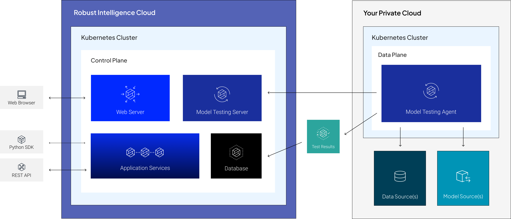

Overview
Cloud Architecture
Robust Intelligence runs on Kubernetes.
To isolate data source access and reduce maintenance burden, core services are split into two separate planes: a Control Plane in the Robust Intelligence cloud and a Data Plane in your cloud.
- Control Plane
This is the central management hub for your Robust Intelligence application.
All user interactions go through the Control Plane.
Administrative actions (e.g., adding new users) are served directly by the Control Plane; however, model testing requests are relayed to the Data Plane, where they are executed by a model testing agent deployed in your cloud environment.
- Data Plane
This plane isolates access to models and data sources to your cloud environment.
The model testing agent deployed here uses its access to fulfill model testing requests posted by the Control Plane.
During a testing job, the agent queries your models and data sources to execute the Robust Intelligence testing suite, returning test results to the Control Plane upon completion.
Deployment Process
Your Solutions Architect (SA) will lead the deployment with your MLOps team.
- Phase 1: Scoping
Estimated Duration: 1 session with an RI Solutions Architect and your DevOps Administrator(s)
Your SA will guide you through the system requirements so that you can prepare resources with your internal teams in advance.
Prior to deployment, Robust Intelligence will provision your control plane on dedicated infrastructure in our cloud.
- Phase 2: Deployment and Validation
Estimated Duration: 1-2 sessions with an RI Solutions Architect and your DevOps Engineer(s)
Your SA will assist you with the self-guided Helm installation and subsequent validation.
After the initial deployment, your administrator(s) can configure additional agents using the same self-guided installation process.
This documentation is available for your reference — begin with Requirements.